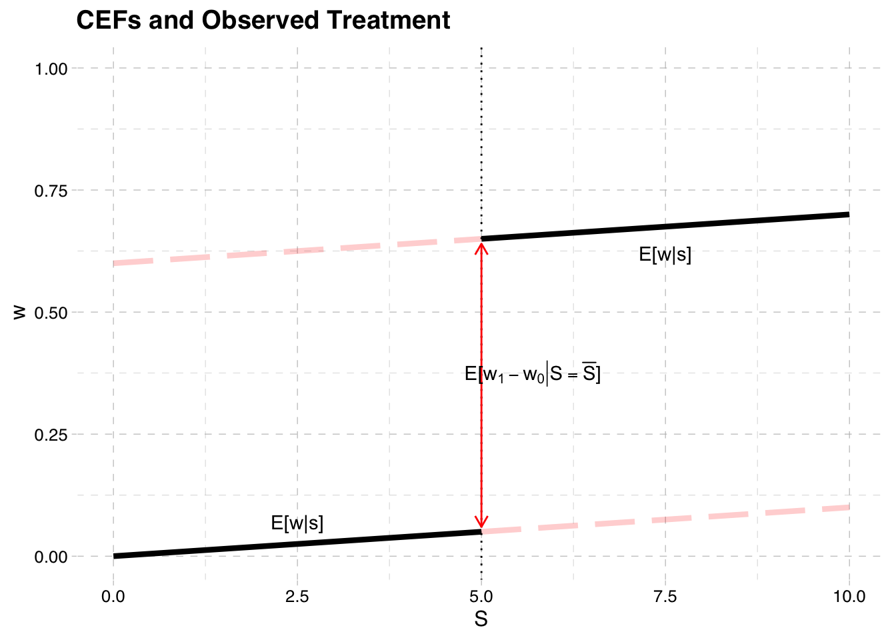
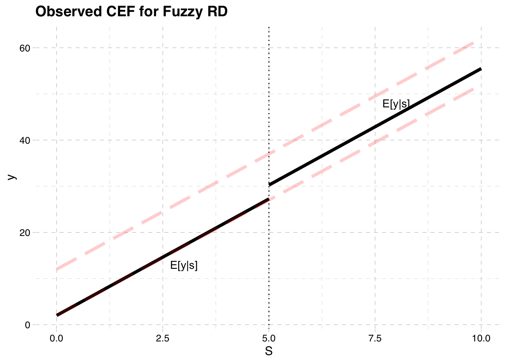
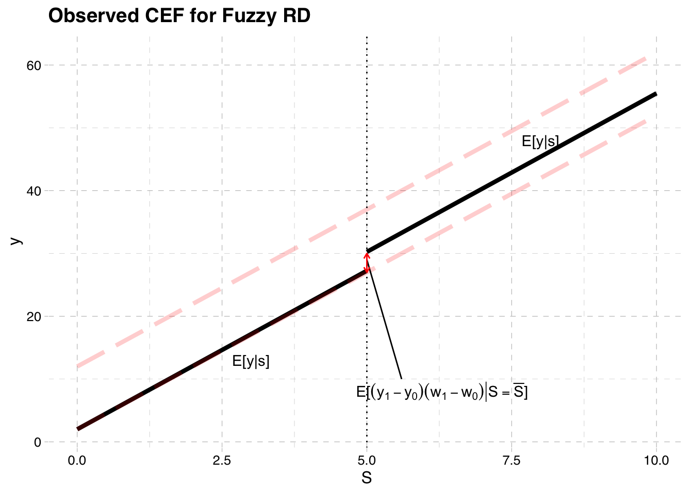
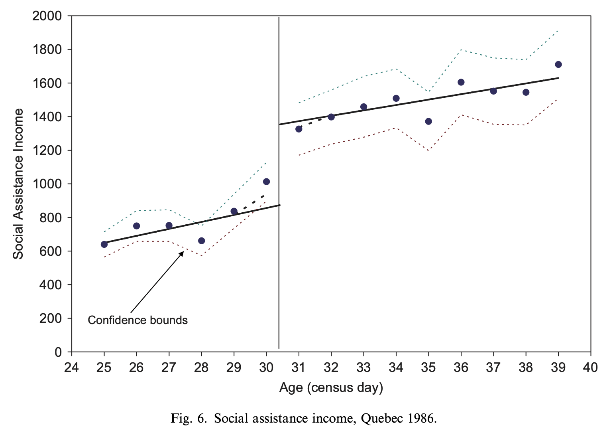
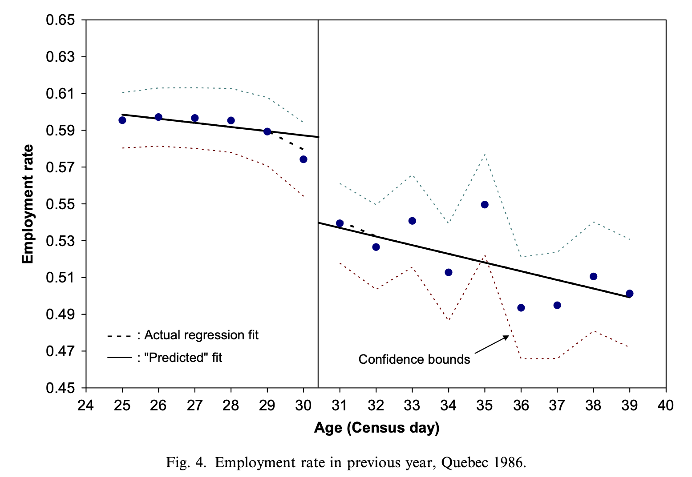

── Attaching core tidyverse packages ──────────────────────── tidyverse 2.0.0 ──
✔ dplyr 1.1.2 ✔ readr 2.1.4
✔ forcats 1.0.0 ✔ stringr 1.5.0
✔ ggplot2 3.4.2 ✔ tibble 3.2.1
✔ lubridate 1.9.2 ✔ tidyr 1.3.0
✔ purrr 1.0.1
── Conflicts ────────────────────────────────────────── tidyverse_conflicts() ──
✖ dplyr::filter() masks stats::filter()
✖ dplyr::lag() masks stats::lag()
ℹ Use the conflicted package (<http://conflicted.r-lib.org/>) to force all conflicts to become errors
Loading required package: kableExtra
Attaching package: 'kableExtra'
The following object is masked from 'package:dplyr':
group_rows
Attaching package: 'ggdag'
The following object is masked from 'package:stats':
filterRegression Discontinuity
EC655 - Econometrics
Justin Smith
Wilfrid Laurier University
Fall 2023

Introduction
Introduction
RD is a popular method to identify causal treatment effects
The method mimics a randomized experiment
People are assigned to treatment or not based on some known continuous variable
- Those above some “cutoff” are given the treatment
Around the cutoff people share similar characteristics, except for the treatment
Thus, looking at outcome differences for those just above cutoff compared to just below will reveal causal effect of treatment
It identifies a local LATE
It is LATE in the sense we defined in instrumental variables
Also, it focuses on people in the immediate vicinity of the discontinuity
Example
Example: Milligan and Lemieux (2008)
Effect of social assistance on employment
- Extra dollars of social assistance is the treatment
Amount of social assistance determined by age
Before 1989, 30+ year olds got roughly $550 in monthly benefits
Those under 30 got roughly $200
Treatment is getting more social assistance
People around age 30 are roughly similar on average
Compares employment rates for 30 year olds to those just under 30
- At the cutoff, the only difference between 2 groups is benefit level
Reveals causal effect of getting more benefits on employment
Results show more benefits means lower employment rates
Fuzzy Regression Discontinuity
Setup
We still have potential outcomes \(y_{0}\) and \(y_{1}\) that are functions of \(S\)
Graph below plots their CEFs again as a function of \(S\)
The cutoff point is still \(\bar{S}\)
CEF of Potential Outcomes

Treatment
The treatment is now only partially determined by \(S\)
People are assigned to treatment if \(S > \bar{S}\)
But they may not take it, so actual treatment could differ
Suppose that assignment to treatment is \(z\)
\[z = 1[S > \bar{S}]\]
- Actual treatment is determined by \(w\)
\[w = w_{0} + (w_{1} - w_{0})z\]
- The potential treatments are functions of \(S\)
- The observed treatment is \(w_{0}\) if \(S \leq \bar{S}\) and \(w_{1}\) if \(S > \bar{S}\)
CEF of Treatment
ggplot() +
geom_function(fun = function(x) 0.01*x, color = "black", xlim=c(0,5), size = 1.5) +
geom_function(fun = function(x) 0.01*x+0.6, color = "red", xlim=c(0,5), linetype='longdash', size = 1.5, alpha = .2) +
geom_function(fun = function(x) 0.01*x, color = "red", xlim=c(5,10), linetype='longdash', size = 1.5, alpha = .2) +
geom_function(fun = function(x) 0.01*x+0.6, color = "black", xlim=c(5,10), size = 1.5) +
geom_vline(xintercept = 5, linetype="dotted") +
labs(x = "S", y = "w", title = "CEFs and Observed Treatment") +
theme_pander(nomargin = FALSE) +
xlim(0,10) +
annotate("text", x=2.5, y=0.07, label = "E[w|s]") +
annotate("text", x=7.5, y=0.62, label = "E[w|s]") +
ylim(0,1) +
geom_segment(aes(x = 5, y = 0.06, xend = 5, yend = 0.64),color = "red",
arrow = arrow(length = unit(0.25, "cm"), ends="both"))+
annotate("text", x=5.7, y=0.375, label = TeX("$\\E[w_{1} -w_{0} |S = \\bar{S}]$"))Warning in is.na(x): is.na() applied to non-(list or vector) of type
'expression'
Observed Outcomes
Like before we can plot the CEF of the observed outcome
Unlike before
\[E[y|S \ge \bar{S}] \neq E[y_{1}|S \ge \bar{S}]\] \[E[y|S < \bar{S}] \neq E[y_{0}|S < \bar{S}]\]
- This is because actual treatment can deviate from assigned treatment
Observed Outcomes
- To find the CEF of the observed outcome remember
\[y = y_{0} + (y_{1} - y_{0})w\]
- Rearrange
\[ y = y_{0}(1-w) + y_{1}w\]
- Take expectations conditional on \(S\)
\[E[y|S] = E[y_{0}|S] (1-E[w|S]) + E[y_{1}|S]E[w|S]\]
CEF of Observed Outcome

Treatment Effect
Computing the treatment effect is more complicated
It operates like the TSLS model we saw before
\(z\) is as an instrument for \(w\)
Treatment effect is ratio of mean difference in \(y\) to mean difference in \(w\)
The treatment effect is a LATE, at the cutoff
Treatment Effect
- Difference in CEF on each side of the cutoff
\[E[y|S = \bar{S}] - lim_{S\uparrow \bar{S}} E[y|S]\]
- Replace \(y\) with \(y = y_{0} + (y_{1} - y_{0})w\)
\[= E[y_{0} + (y_{1} - y_{0})w|S = \bar{S}] - lim_{S\uparrow \bar{S}} E[y_{0} + (y_{1} - y_{0})w|S]\]
- When \(S \ge \bar{S}\) then \(w = w_{1}\) and when \(S < \bar{S}\) then \(w = w_{0}\)
\[= E[y_{0} + (y_{1} - y_{0})w_{1}|S = \bar{S}] - lim_{S\uparrow \bar{S}} E[y_{0} + (y_{1} - y_{0})w_{0}|S]\]
Model
- Performing a bit of algebra, we get
\[= E[(y_{1} - y_{0})(w_{1}-w_{0})|S = \bar{S}] + (E[y_{0}|S = \bar{S}] - lim_{S\uparrow \bar{S}} E[y_{0} |S] )\]
- If \(E[y_{0}|S = \bar{S}]\) is continuous at the cutoff, we can drop the second term
\[= E[(y_{1} - y_{0})(w_{1}-w_{0})|S = \bar{S}] \]
CEF of Observed Outcome
Warning in is.na(x): is.na() applied to non-(list or vector) of type
'expression'
Model
- If we make a monotonicity assumption (as we did in the LATE notes)
\[ E[(y_{1} - y_{0})(w_{1}-w_{0})|S = \bar{S}] = E[y_{1} - y_{0}|w_{1}-w_{0}=1,S = \bar{S}] E[w_{1} - w_{0}|S = \bar{S}]\]
- The CEF for \(w\) is
\[E[w|S = \bar{S}] - lim_{S\uparrow \bar{S}} E[w|S] = E[w_{1} - w_{0}|S = \bar{S}] \]
- Which brings us to
\[\frac{E[y|S = \bar{S}] - lim_{S\uparrow \bar{S}} E[y|S] }{E[w|S = \bar{S}] - lim_{S\uparrow \bar{S}} E[w|S] } = E[y_{1} - y_{0}|w_{1}-w_{0}=1,S = \bar{S}]\]
Visualizing Fuzzy RD
ggplot() +
geom_function(fun = function(x) 0.01*x, color = "black", xlim=c(0,5), size = 1.5) +
geom_function(fun = function(x) 0.01*x+0.6, color = "red", xlim=c(0,5), linetype='longdash', size = 1.5, alpha = .2) +
geom_function(fun = function(x) 0.01*x, color = "red", xlim=c(5,10), linetype='longdash', size = 1.5, alpha = .2) +
geom_function(fun = function(x) 0.01*x+0.6, color = "black", xlim=c(5,10), size = 1.5) +
geom_vline(xintercept = 5, linetype="dotted") +
labs(x = "S", y = "w", title = "CEFs and Observed Treatment") +
theme_pander(nomargin = FALSE) +
xlim(0,10) +
annotate("text", x=2.5, y=0.07, label = "E[w|s]") +
annotate("text", x=7.5, y=0.62, label = "E[w|s]") +
ylim(0,1) +
geom_segment(aes(x = 5, y = 0.06, xend = 5, yend = 0.64),color = "red",
arrow = arrow(length = unit(0.25, "cm"), ends="both"))+
annotate("text", x=5.7, y=0.375, label = TeX("$\\E[w_{1} -w_{0} |S = \\bar{S}]$"))Warning in is.na(x): is.na() applied to non-(list or vector) of type
'expression'
Warning in is.na(x): is.na() applied to non-(list or vector) of type
'expression'
Model
In the fuzzy RD we divide the mean difference in outcomes by the mean difference in treatment
- This “scales” the difference in outcomes by the difference in treatment probability
The interpretation is a LATE
- The treatment effect for compliers, at the cutoff
Just like sharp RD, you can allow different slopes, nonlinearities
Estimation
Estimate using TSLS
Treat \(w\) as endogenous, and \(z\) as an exogenous instrument
\(S\) is the included instrument
A linear structural model would be
\[y = \beta_{0} + \beta_{1} S+\rho w + e\]
- With first stage
\[w = \alpha_{0} + \alpha_{1} S + \pi z + u\]
Estimation
- Estimating by TSLS the vector of coefficients is
\[\boldsymbol{\hat{\beta}} = \left( \mathbf{\mathbf{\hat{X}}'\mathbf{\hat{X}}} \right)^{-1}\mathbf{\mathbf{\hat{X}}'y} = \begin{bmatrix} \hat{\beta}_{0}\\ \hat{\beta}_{1}\\ \hat{\rho} \end{bmatrix}\]
The \(\hat{X}\) matrix contains the constant, \(S\), and \(\hat{w}\)
As before you can add different slopes, nonlinearities
- Ensure you recenter the \(S\) variable around the cutoff
Milligan and Lemieux (2008)


Internal Validity of RD
The treatment variable does not have to be binary
- See van der Klaauw (2001), Matsudaira (2008)
The method only works if the running variable \(S\) cannot be manipulated
Ex: Matsudaira (2008)
Effect of summer school on future performance with 50% grade cutoff
Kids may know the assignment rule to summer school
Some more “motivated” kids put in effort to not attend
Their non-treated outcomes differ on each side of the cutoff
i.e. \(E[y_{0}|S = \bar{S}] = lim_{S\uparrow \bar{S}} E[y_{0}|S]\)
If running variable is manipulated in a non-random way, RD is invalid and biased
Internal Validity of RD
Two ways to check if the running variable has been manipulated
Check for discontinuities in baseline variables
Treatment is expected to be discontinuous; this is where our variation comes from
However, near the discontinuity, any other variable must be continuous
If we had covariates (\(X\)) determined before treatment, we could check to see if they have discontinuities \[x=\gamma_{0} + \gamma_{1}S + \delta z + u\]
If \(\delta \neq 0\), then this may signal a problem
Check for discontinuities in the density of the running variable
A histogram may show “piling up” of people on one side of discontinuity
If so, this may signal a problem
See McCrary(2008) for more technical details
External Validity of RD
External validity is the ability to extrapolate estimates
RD estimates are local to the cutoff
If there are heteogeneous treatment effects, may not be able to apply to whole population
- Ex: Estimates of benefits on employment for 30 year olds may not apply to 50 year olds
- Ex: Estimates of summer school on test scores for kids around 50% may not apply to high achievers
Must be careful not to overinterpret results